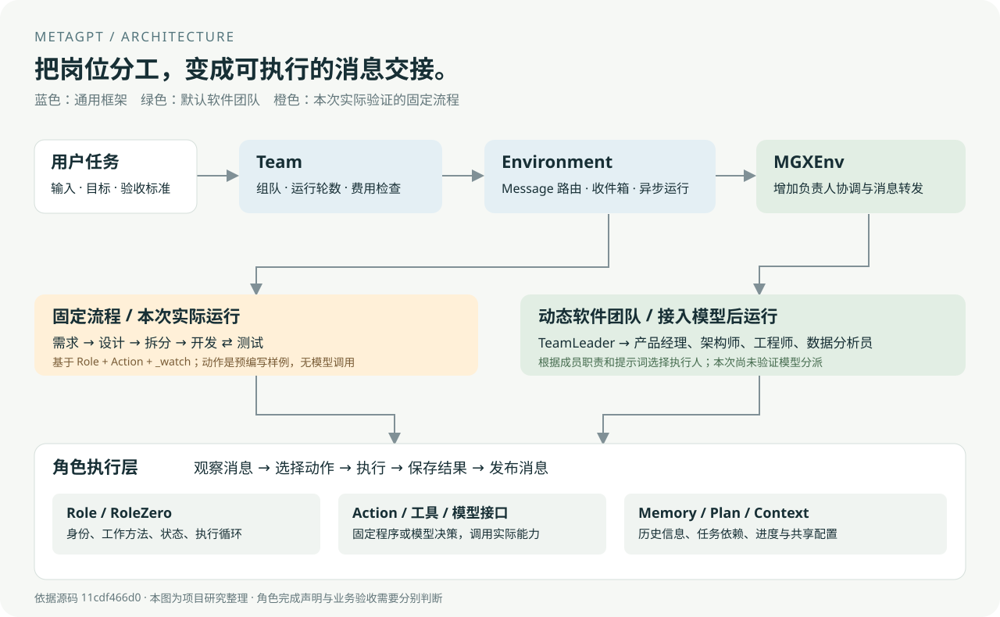

等待运行记录
METAGPT / MULTI-AGENT LAB
看见一次
软件团队的交接。
从需求，到代码，再到测试与返修。
用真实运行记录，看懂 Agent 怎样分工、执行和传递结果。
01 / FOLLOW THE WORK
一个计算器，五个角色。
任务：先减优惠券，再打折；结果不能为负，金额保留两位小数。
检查本机连接…
正在加载实际运行记录。页面中的步骤播放是回放；重新运行会启动本机 Python 进程。
01产品经理需求与验收
→02架构师技术方案
→03项目经理任务拆分
→04开发工程师交付与返修
⇄05测试工程师运行与反馈
检查真实文件产物
运行后可查看需求、设计、任务、代码和测试结果。TRY THE OUTPUT
试用交付的计算器
本机服务会实际运行交付的 Python 文件。先减券，再打折。
02 / THE ARCHITECTURE
谁在调度，谁在做决定？

程序运行角色
Team 控制循环；Environment 分发消息，用异步任务运行当前有工作的角色。
两种协作策略
固定流程监听上游动作；默认 MGX 团队由 TeamLeader 结合模型判断分派。
结果回到上下文
Action 或工具真正操作数据与文件，执行结果用于下一步。角色通常不是独立线程。
UNDERSTAND THE FRAMEWORK
提示词定义工作方式，程序组织执行。
一个模型，多种岗位
模型提供理解与生成能力；角色通过职责、上下文、记忆和工具形成差异。配置提示词不会重新训练模型，也不会凭空增加能力。
两种方式交接任务
固定流程依据消息类型触发；动态团队由负责人借助模型选择成员，再调用发送工具。消息投递与异步运行都由程序完成。
用产物和测试验收
工具真正读写文件、执行代码与测试。Agent 通常是有状态对象，未必是独立线程；完成声明仍需要实际验收。
03 / THE AGENT DIRECTORY
软件角色是主线，还有更多场景。
从源码提取的 27 个具体角色；不含基类及教学示例。存在实现，不等于全部已运行验证。
- 继承自
- 声明的工具
列表展示库内置角色。本次无需密钥的运行使用自定义固定动作角色，验证同一套调度基础。
04 / REPRODUCE & EXTEND
先跑通交接，再接入模型。
固定流程演示
在独立环境安装上游库，运行 5 角色交接、文件交付和两轮真实测试。
.venv\Scripts\python experiments\run_demo.py
.venv\Scripts\python experiments\serve.py原版 DataInterpreter
接入模型后，运行原版数据解释器，分析样本销售数据并生成报告与图表。
.venv\Scripts\python experiments\live_demo.py --config runtime\config2.yaml配置保存在本机，不在网页填写密钥。此模式会执行模型生成的代码。
本次证明了什么？
真实的角色激活、消息交接、文件写入、测试失败、返修和停止。尚未证明内置软件团队的模型规划、自动生成质量或真实项目交付成功率。